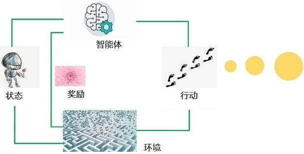
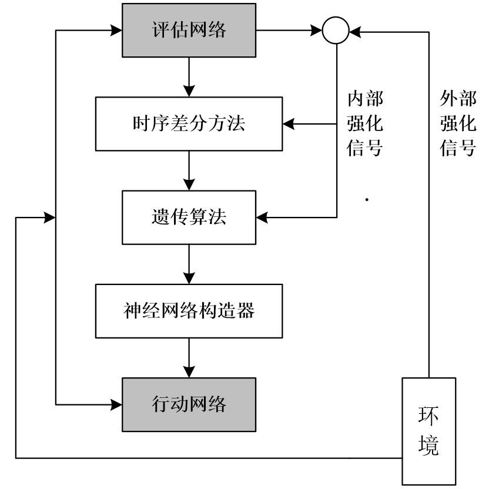
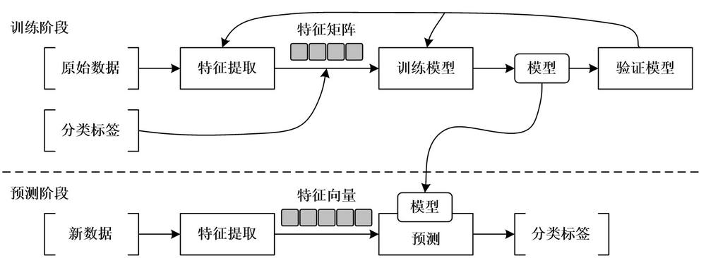
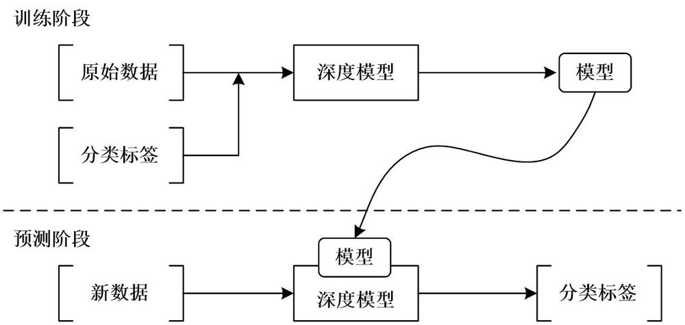
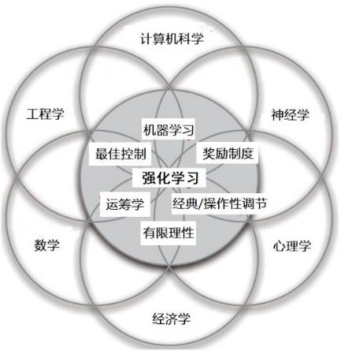
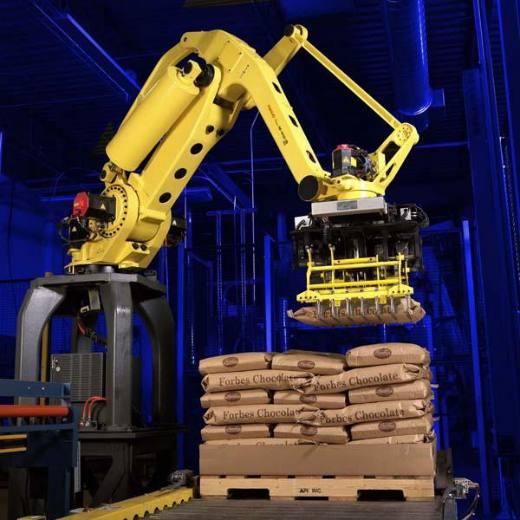
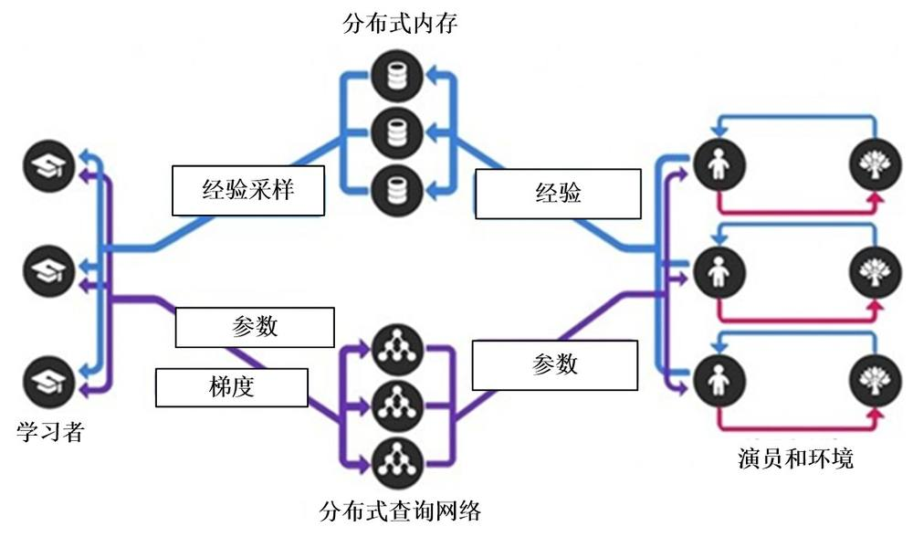

第 1 页 · 数智人才培养

数智人才培养
AI通识精品系列
周苏 教授 QQ：81505050
人工智能通识教程

第 2 页 · 第7章
第7章
周苏 教授 QQ：81505050
强化学习


第 3 页 · 强化学习是机器学习的一个分支，也称增强学习或评价学习，它以环境反馈（奖/惩信号）作为输入，以统计和动态规划技术为指导的一
强化学习是机器学习的一个分支，也称增强学习或评价学习，它以环境反馈（奖/惩信号）作为输入，以统计和动态规划技术为指导的一种学习方法，是一种广泛应用于创建智能系统的模式。强化学习使用机器的历史和经验来做出决定，其经典应用是玩游戏。与监督和无监督学习不同，强化学习不涉及提供“正确的”答案或输出。相反，它
只关注性能，这反映了人类是如何根据积
极和消极的结果学习的。
第7章 强化学习

第 4 页 · 由于强化学习涉及的知识面广，尤其是涵盖了诸多数学知识，如贝尔曼方程、最优控制等，更需要对强化学习有系统性的梳理与认识。需
由于强化学习涉及的知识面广，尤其是涵盖了诸多数学知识，如贝尔曼方程、最优控制等，更需要对强化学习有系统性的梳理与认识。需要对强化学习在机器学习领域中的定位以及与其他机器学习之间的异同进行辨析。
第7章 强化学习
第 5 页 · 01

01
强化学习
的定义
02
与监督学习
的区别
03
强化学习
基础理论
04
强化学习
分类
目录 / CONTENTS
05
强化学习
的应用
第 6 页 · PART 01
PART 01
强化学习的定义
第 7 页 · 强化学习侧重在线学习并试图在探索和利用之间保持平衡，用于描述和解决智能体在与环境的交互过程中，以“试错”的方式，通过学习
强化学习侧重在线学习并试图在探索和利用之间保持平衡，用于描述和解决智能体在与环境的交互过程中，以“试错”的方式，通过学习策略达成回报最大化或实现特定目标的问题。
与监督学习和无监督学习不同，强化学习不要求预先给定任何数据，主要表现在强化信号上，通过接收环境对动作的奖励（反馈）获得学习信息并更新模型参数。由环境提供的强化信号是对产生动作的好坏作一种评价（通常为标量信号），而不是告诉强化学习系统如何去产生正确的动作。
7.1 强化学习的定义
第 8 页 · 由于外部环境提供的信息很少，强化学习系统必须靠自身的经历进行学习，进而在行动—评价的环境中获得知识，改进行动方案以适应环
由于外部环境提供的信息很少，强化学习系统必须靠自身的经历进行学习，进而在行动—评价的环境中获得知识，改进行动方案以适应环境。
强化学习问题主要在信息论、博弈论、自动控制等领域讨论，用于解释有限理性条件下的平衡态、设计推荐系统和机器人交互系统。一些复杂的强化学习算法在一定程度上具备解决复杂问题的通用智能，可以在围棋和电子游戏中达到人类水平。
7.1 强化学习的定义
第 9 页 · 强化学习的历史主要沿两条主线发展而来，第一条主线是心理学上模仿动物学习方式的试错法，第二条主线是求解最优控制问题，两条主
强化学习的历史主要沿两条主线发展而来，第一条主线是心理学上模仿动物学习方式的试错法，第二条主线是求解最优控制问题，两条主线最初是独立发展的。心理学上的试错法从20世纪50年代末、60年代初贯穿在人工智能的发展中，并且一定程度上促进了强化学习的发展。20世纪80年代初期，试错法随着人工智能的热潮而被学者们广泛研究。而求解最优控制法则是利用动态规划法求解最优值函数。到20世纪80年代末，基于时间差分法求解的第三条主线开始出现，它吸收前面两条主线的思想，奠定了现代强化学习在机器学习领域中的地位。
7.1.1 发展历史
第 10 页 · 有理由相信，深度学习和强化学习的结合体——深度强化学习是人工智能的未来之路。智能的系统必须能够在没有持续监督信号的情况下
有理由相信，深度学习和强化学习的结合体——深度强化学习是人工智能的未来之路。智能的系统必须能够在没有持续监督信号的情况下自主学习，而深度强化学习正是自主学习的最佳代表，能够给人工智能带来更多发展空间与想象力。人工智能系统必须能够自己去判断对与错，而不是告诉系统或者通过一种监督模拟的方法实现。
7.1.1 发展历史
第 11 页 · 强化学习的基本原理是：如果智能体的某个行为策略导致环境正的奖赏（强化信号），那么该智能体以后产生这个行为策略的趋势便会加
强化学习的基本原理是：如果智能体的某个行为策略导致环境正的奖赏（强化信号），那么该智能体以后产生这个行为策略的趋势便会加强。智能体的目标是在每个离散状态发现最优策略，以使期望的折扣奖赏最大化。
强化学习把学习看作试探评价过程。智能体选择一个动作用于环境，环境接受该动作后状态发生变化，同时产生一个强化信号（奖或惩）反馈给智能体，智能体根据强化信号和环境当前状态再选择下一个动作，选择的原则是使受到正强化（奖）的概率增大。选择的动作不仅影响立即强化值，而且影响环境下一时刻的状态及最终的强化值。
7.1.2 基本模型和原理
第 12 页 · 强化学习系统需要使用某种随机单元，动态地调整参数，以达到强化信号最大，智能体在可能动作空间中进行搜索并发现正确的动作。强
强化学习系统需要使用某种随机单元，动态地调整参数，以达到强化信号最大，智能体在可能动作空间中进行搜索并发现正确的动作。强化学习的常见模型是标准的马尔可夫决策过程（MDP）。
按给定条件，强化学习可分为基于模式强化学习和无模式强化学习，以及主动强化学习和被动强化学习。强化学习的变体包括逆向强化学习、阶层强化学习和部分可观测系统的强化学习。求解强化学习问题所使用的算法可分为策略搜索算法和值函数算法两类。可以在强化学习中使用深度学习模型，形成深度强化学习。
7.1.2 基本模型和原理
第 13 页 · 强化学习主要由智能体和环境组成，两者间通过奖励、状态、 动作3个信号进行交互。由于智能体和环境的交互方式与人类和环境的交
强化学习主要由智能体和环境组成，两者间通过奖励、状态、 动作3个信号进行交互。由于智能体和环境的交互方式与人类和环境的交互方式类似，可以认为强化学习是一套通用的学习框架，用来解决通用人工智能问题，因此它也被称为通用人工智能的机器学习方法。
强化学习实际上是智能体在与环境进行交互的过程中，学会最佳决策序列。
7.1.3 网络模型设计
第 14 页 · 强化学习的基本组成元素定义如下。
强化学习的基本组成元素定义如下。
（1）智能体：强化学习的本体，作为学习者或者决策者。
（2）环境：强化学习智能体以外的一切，主要由状态集组成。
（3）状态：表示环境的数据。状态集是环境中所有可能的状态。
（4）动作：智能体可以做出的动作。动作集是智能体可以做出的所有动作。
7.1.3 网络模型设计
第 15 页 · （5）奖励：智能体在执行一个动作后，获得的正/负奖励信号。奖励集是智能体可以获得的所有反馈信息，正/负奖励信号亦可称作正
（5）奖励：智能体在执行一个动作后，获得的正/负奖励信号。奖励集是智能体可以获得的所有反馈信息，正/负奖励信号亦可称作正/负反馈信号。
（6）策略：从环境状态到动作的映射学习，该映射关系称为策略。通俗地说，智能体选择动作的思考过程即为策略。
（7）目标：智能体自动寻找在连续时间序列里的最优策略，这通常指最大化长期累积奖励。
7.1.3 网络模型设计
第 16 页 · 在强化学习中，每一个自主体由两个神
在强化学习中，每一个自主体由两个神
经网络模块组成，即行动网络和评估网
络。行动网络是根据当前的状态而决定
下一个时刻施加到环境上去的最好动作。
图7-2 强化学习的网络模型设计
7.1.3 网络模型设计

第 17 页 · 对于行动网络，强化学习算法允许它的输出结点进行随机搜索，有了来自评估网络的内部强化信号后，行动网络的输出结点即可有效地完
对于行动网络，强化学习算法允许它的输出结点进行随机搜索，有了来自评估网络的内部强化信号后，行动网络的输出结点即可有效地完成随机搜索，并且大大提高选择好的动作的可能性，同时可以在线训练整个行动网络。
用一个辅助网络来为环境建模，评估网络可单步和多步预报当前由行动网络施加到环境上的动作强化信号，根据当前状态和模拟环境预测其标量值。可以提前向行动网络提供有关将候选动作的强化信号，以及更多的奖惩信息（内部强化信号），以减少不确定性并提高学习速度。
7.1.3 网络模型设计
第 18 页 · 进化强化学习对评估网络使用时序差分预测方法TD和反向传播BP算法进行学习，而对行动网络进行遗传操作，使用内部强化信号作为
进化强化学习对评估网络使用时序差分预测方法TD和反向传播BP算法进行学习，而对行动网络进行遗传操作，使用内部强化信号作为行动网络的适应度函数。
网络运算分成两个部分，即前向信号计算和遗传强化计算。在前向信号计算时，对评估网络采用时序差分预测方法，由评估网络对环境建模，可以进行外部强化信号的多步预测，为行动网络提供更有效的内部强化信号，使它产生更恰当的行动。内部强化信号使行动网络、评估网络在每一步都可以进行学习，而不必等待外部强化信号，从而大大加速了两个网络的学习。
7.1.3 网络模型设计
第 19 页 · 以采用强化学习方法研究未知环境下机器人导航问题为例，由于环境的复杂性和不确定性，这些问题变得更为复杂，因此，在强化学习的
以采用强化学习方法研究未知环境下机器人导航问题为例，由于环境的复杂性和不确定性，这些问题变得更为复杂，因此，在强化学习的设计中要考虑：
（1）如何表示状态空间和动作空间。
（2）如何选择建立信号以及如何通过学习来修正不同状态－动作对的值。
（3）如何根据这些值来选择合适的动作。
7.1.4 设计考虑
第 20 页 · 在标准的强化学习中，智能体作为学习系统，获取外部环境的当前状态信息，对环境采取试探行为并获取环境反馈的对此动作的评价和新
在标准的强化学习中，智能体作为学习系统，获取外部环境的当前状态信息，对环境采取试探行为并获取环境反馈的对此动作的评价和新的环境状态。如果智能体的某个动作导致环境正的奖赏（立即报酬），那么智能体以后产生这个动作的趋势便会加强；反之，智能体产生这个动作的趋势将减弱。在学习系统的控制行为与环境反馈的状态及评价的反复交互作用中，以学习方式不断修改从状态到动作的映射策略，以达到优化系统性能目的。学习从环境状态到行为的映射，使得智能体选择的行为能够获得环境最大的奖赏，使外部环境对学习系统在某种意义下的评价（或整个系统的运行性能）为最佳。
7.1.4 设计考虑
第 21 页 · 强化学习使人们从手动构造行为和标记监督学习所需的大量数据集（或人工编写控制策略）中解脱出来。它在机器人技术中的应用中特别
强化学习使人们从手动构造行为和标记监督学习所需的大量数据集（或人工编写控制策略）中解脱出来。它在机器人技术中的应用中特别有价值，该领域需要能够处理连续的、高维的、部分可观测环境的方法，在这样的环境中，成功的行为可能包含成千上万甚至数百万的基元动作。
7.1.5 数据依赖性
第 22 页 · 强化学习的方法有很多且错综复杂，这是因为并不存在一种公认的最佳方法。
强化学习的方法有很多且错综复杂，这是因为并不存在一种公认的最佳方法。
（1）智能体整体的设计限制了学习所需的信息类型。
· 基于模型的强化学习智能体需要（或者配备有）环境的转移模型，并学习效用函数。
· 无模型强化学习智能体可以学习一个动作效用函数或学习一个策略。
基于模型和无模型方法相比，核心问题是智能体函数的最佳表示方式。随着环境变得更加复杂，基于模型方法的优势将变得越发明显。
7.1.5 数据依赖性
第 23 页 · （2）效用函数可以通过如下几种方法进行学习。
（2）效用函数可以通过如下几种方法进行学习。
· 直接效用估计将观测到的总奖励用于给定状态，作为学习其效用的样本直接来源。
· 自适应动态规划（ADP）从观测中学习模型和奖励函数，然后使用价值或策略迭代来获得效用或最优策略。ADP较好地利用了环境的邻接结构作为状态效用的局部约束。
7.1.5 数据依赖性
第 24 页 · · 时序差分（TD）方法调整效用估计，使其与后继状态的效用估计相一致。它是ADP方法的一个简单近似，且学习时不需要预先知
· 时序差分（TD）方法调整效用估计，使其与后继状态的效用估计相一致。它是ADP方法的一个简单近似，且学习时不需要预先知道转移模型。此外，使用一个学习模型来产生伪经验可以学习得更快。
7.1.5 数据依赖性
第 25 页 · （3）可以通过ADP方法或TD方法学习动作效用函数或Q函数。在使用TD方法时，在学习或动作选择阶段都不需要模型，简化了学
（3）可以通过ADP方法或TD方法学习动作效用函数或Q函数。在使用TD方法时，在学习或动作选择阶段都不需要模型，简化了学习问题，但同时潜在地限制了它在复杂环境中的学习能力，因为智能体无法模拟可能的动作过程的结果。
进行动作选择时，它必须在这些动作的价值估计的有用新信息之间进行权衡。探索问题的精确解是无法获得的，但一些简单的启发式可以给出一个合理的结果。同时探索性智能体也必须注意避免过早陷入终止态。
7.1.5 数据依赖性
第 26 页 · （4）在大的状态空间中，强化学习算法必须进行函数近似表示，以便在状态空间进行泛化。深度强化学习采用深度神经网络作为近似函
（4）在大的状态空间中，强化学习算法必须进行函数近似表示，以便在状态空间进行泛化。深度强化学习采用深度神经网络作为近似函数，已经在一些困难问题上取得了相当大的成功。
奖励设计和分层强化学习有助于学习复杂的行为，特别是在奖励稀少且需要长动作序列才能获得奖励的情况下。
（5）策略搜索方法直接对策略的表示进行操作，并试图根据观测到的表现对其进行改进，在随机领域中，性能的剧烈变化是一个严重的问题，而在模拟领域中可以通过预先固定随机程度来克服这个难点。
7.1.5 数据依赖性
第 27 页 · （6）难以获得正确的奖励函数时，通过观测专家行为进行学徒学习是一种有效的解决方案，模仿学习将问题转换为从专家的状态—动作
（6）难以获得正确的奖励函数时，通过观测专家行为进行学徒学习是一种有效的解决方案，模仿学习将问题转换为从专家的状态—动作对中进行学习的监督学习问题，逆强化学习从专家的行为中推断有关奖励函数的信息。
7.1.5 数据依赖性
第 28 页 · PART 02
PART 02
与监督学习的区别
第 29 页 · 从严格意义上说，AlphaGo程序在人机围棋对弈中打败韩国围棋大师李世石，其中对人工智能、机器学习和深度强化学习这3种技
从严格意义上说，AlphaGo程序在人机围棋对弈中打败韩国围棋大师李世石，其中对人工智能、机器学习和深度强化学习这3种技术都有所使用，但使用得更多的还是深度强化学习。
强化学习和监督学习的共同点是两者都需要大量的数据进行学习训练，但两者的学习方式不尽相同，两者所需的数据类型也有差异，监督学习需要多样化的标签数据，强化学习则需要带有回报的交互数据。
7.2 与监督学习的区别
第 30 页 · 强化学习与监督学习、无监督学习不同之处具体有以下5个方面。
强化学习与监督学习、无监督学习不同之处具体有以下5个方面。
（1）没有监督者，只有奖励信号。监督学习要基于大量作为训练与学习目标的标注数据进行，而强化学习中没有监督者，它不是由已经标注好的样本数据来告诉系统什么是最佳动作。换言之，智能体不能够马上获得监督信号，只是从环境的反馈中获得奖励信号。
（2）反馈延迟。实际上是延迟奖励，环境可能不会在每一步动作上都给与奖励，有时候需要完成一连串的动作，甚至是完成整个任务后才能获得奖励。
7.2 与监督学习的区别
第 31 页 · （3）试错学习。因为没有监督，所以没有直接的指导信息，智能体要与环境不断进行交互，通过试错的方式来获得最优策略。
（3）试错学习。因为没有监督，所以没有直接的指导信息，智能体要与环境不断进行交互，通过试错的方式来获得最优策略。
（4）智能体的动作会影响其后续数据。智能体选择不同动作会进入不同的状态。由于强化学习基于马尔可夫决策过程（当前状态只与上一个状态有关，与其他状态无关），因此下一个时间步所获得的状态变化，环境的反馈也会随之发生变化。
（5）时间序列很重要。强化学习更加注重输入数据的序列性，下一个时间步t的输入依赖于前一个时间步t-1的状态（即马尔可夫属性）。
7.2 与监督学习的区别
第 32 页 · 一般而言，监督学习是通过对数据进行分析，找到数据的表达模型，随后利用该模型，在新输入的数据上进行决策。下图为监督学习的一
一般而言，监督学习是通过对数据进行分析，找到数据的表达模型，随后利用该模型，在新输入的数据上进行决策。下图为监督学习的一般方法，主要分为训练阶段和
预测阶段。
图7-3 监督学习的一般方法
7.2.1 学习方式

第 33 页 · 在训练阶段，首先根据原始数据进行特征提取（“特征工程”）。得到数据特征后，可以使用决策树、随机森林等机器学习算法去分析数
在训练阶段，首先根据原始数据进行特征提取（“特征工程”）。得到数据特征后，可以使用决策树、随机森林等机器学习算法去分析数据之间的关系，最终得到关于输入数据的模型。在预测阶段，同样按照特征工程的方法抽取数据的特征，使用训练阶段得到的模型对特征向量进行预测，最终得到数据所属的分类标签。值得注意的是，验证模型使用验证集数据对模型进行反向验证，确保模型的正确性和精度。
7.2.1 学习方式
第 34 页 · 与传统机器学习中监督学习的一般方法相比，深度学习的一般方法（见下图）少了特征工程，从而大大降低了业务领域门槛与人力成本。
与传统机器学习中监督学习的一般方法相比，深度学习的一般方法（见下图）少了特征工程，从而大大降低了业务领域门槛与人力成本。
图7-4 深度学习的一般方法
7.2.1 学习方式

第 35 页 · 监督学习分为预测和训练两个阶段，学习只能发生在训练阶段，该阶段会出现一个监督信号（即具有学习的能力，数学上称为“差分信号
监督学习分为预测和训练两个阶段，学习只能发生在训练阶段，该阶段会出现一个监督信号（即具有学习的能力，数学上称为“差分信号”）。例如在语音识别任务中，需要收集大量的语音语料数据和该语料对应标注好的文本内容。有了原始的语音数据和对应的语音标注数据后，可通过监督学习方法收集数据中的模式，例如对语音分类、判别该语音音素所对应的单词等。
7.2.1 学习方式
第 36 页 · 上述标注语音文本内容相当于一个监督信号，等语音识别模型训练完成后，在预测阶段就不再需要该监督信号，生成的语言识别模型仅用
上述标注语音文本内容相当于一个监督信号，等语音识别模型训练完成后，在预测阶段就不再需要该监督信号，生成的语言识别模型仅用作新数据的预测。如果想要重新修改监督信号，则需要对语言识别模型进行重新训练。有学者研究迁移学习，以期望缩短监督学习的训练时间。
强化学习与监督学习截然不同，其学习过程与生物的自然学习过程非常类似。具体而言，智能体在与环境的互动过程中，通过不断探索与试错的方式，利用基于正/负奖励的方式进行学习。
7.2.1 学习方式
第 37 页 · 强化学习不依赖先验知识数据。例如线上游戏，越来越多的用户使用移动终端进行游戏，使数据的获取来源更为广泛。比如围棋游戏，围
强化学习不依赖先验知识数据。例如线上游戏，越来越多的用户使用移动终端进行游戏，使数据的获取来源更为广泛。比如围棋游戏，围棋的棋谱可以很容易得到，这些棋谱是人类玩家的动作行为记录，如果只用监督学习进行建模，模型学习出的对弈技能很有可能只局限在所收集的有限棋谱内。当出现新的下棋方式时，模型可能会因为找不到全局最优解而使得棋力大减。
7.2.2 先验知识与标注数据
第 38 页 · 强化学习通过自我博弈方式产生更多的标准数据。在强化学习中，如果有基本棋谱，便可以利用系统自我学习和奖励的方式，系统自动学
强化学习通过自我博弈方式产生更多的标准数据。在强化学习中，如果有基本棋谱，便可以利用系统自我学习和奖励的方式，系统自动学习更多的棋谱或者使用两个智能体进行互相博弈，进而为系统自身补充更多的棋谱信息，不受标注数据和先验知识的限制。总之，强化学习可以利用较少的训练信息，让系统不断地自主学习，自我补充更多的信息，进而免受监督者的限制。
7.2.2 先验知识与标注数据
第 39 页 · 另外，可以使用迁移学习来减少标注数据的数量，因为它在一定程度上突破了监督学习中存在的限制，提前在大量标注数据信息中提取其
另外，可以使用迁移学习来减少标注数据的数量，因为它在一定程度上突破了监督学习中存在的限制，提前在大量标注数据信息中提取其高维特征，从而减少后续复用模型的输入数据。迁移学习是把已经训练好的模型参数迁移到新的模型以帮助训练新模型。考虑到大部分数据或任务存在相关性，通过迁移学习可以将已经学到的模型参数（也可理解为模型学到的知识）通过某种方式分享给新模型，进而不需要从零开始学习，加快并优化新模型的学习效率。
7.2.2 先验知识与标注数据
第 40 页 · PART 03
PART 03
强化学习基础理论
第 41 页 · 强化学习的基本元素包括智能体、环境、状态、动作和奖励，智能体通过状态、动作、奖励与环境进行交互，不断地根据环境的反馈信息
强化学习的基本元素包括智能体、环境、状态、动作和奖励，智能体通过状态、动作、奖励与环境进行交互，不断地根据环境的反馈信息进行试错学习。
7.3 强化学习基础理论
第 42 页 · 在强化学习中，可以将数百种不同的算法按智能体所处的环境分成两种类型：一种是环境已知，叫作基于模型，就是智能体已经对环境进
在强化学习中，可以将数百种不同的算法按智能体所处的环境分成两种类型：一种是环境已知，叫作基于模型，就是智能体已经对环境进行建模；另一种是环境未知，叫作免模型。
（1）基于模型的强化学习。例如，工厂载货机器人通过传感器感应地面上的航线来控制其行走。由于地面上的航
线是事先规划好的，工厂的环境也是可控
已知的，因此可以将其视为基于模型的任
务。
7.3.1 基于模型与免模型环境
第 43 页 · 在这些方法中，智能体使用环境的转移模型来帮助解释奖励信号并决定如何行动。模型最初可能是未知的，在这种情况下，智能体通过观
在这些方法中，智能体使用环境的转移模型来帮助解释奖励信号并决定如何行动。模型最初可能是未知的，在这种情况下，智能体通过观测其行为的影响来学习模型；或者它也可能是已知的，例如，国际象棋程序可能知道国际象棋的规则，即便它不知道如何选择好的走法。在部分可观测的环境中，转移模型对于状态估计也是很有用的。基于模型的强化学习系统通常会学习一个效用函数U(s)。
7.3.1 基于模型与免模型环境
第 44 页 · 在强化学习的相关文献中，更多地涉及运筹学而不是经济学，效用函数通常称为价值函数并表示为V(s)。
在强化学习的相关文献中，更多地涉及运筹学而不是经济学，效用函数通常称为价值函数并表示为V(s)。
不过在现实情况下，环境的状态转移概率、奖励函数往往很难提前获取，甚至很难知道环境中一共有多少个状态。
7.3.1 基于模型与免模型环境
第 45 页 · （2）无模型强化学习。例如汽车的自动驾驶系统，在现实交通环境下，很多事情是无法预先估计的，例如路人的行为、往来车辆的行走
（2）无模型强化学习。例如汽车的自动驾驶系统，在现实交通环境下，很多事情是无法预先估计的，例如路人的行为、往来车辆的行走轨迹等情况，因此可以将其视为免模型的任务。
在这种方式中，智能体不知道环境的转移模型，也不会学习它。相反，它直接学习如何采取行为方式，可以使用动态规划法求解。其中主要有以下两种形式，动作效用函数学习和策略搜索。可以使用蒙特卡洛法和时间差分法来求解，还可以使用值函数近似、梯度策略等方法。
7.3.1 基于模型与免模型环境
第 46 页 · 在强化学习中，“探索”的目的是找到更多有关环境的信息，而“利用”的目的是利用已知的环境信息来最大限度地提高奖励。简而言之
在强化学习中，“探索”的目的是找到更多有关环境的信息，而“利用”的目的是利用已知的环境信息来最大限度地提高奖励。简而言之，“探索”是尝试新的动作行为，而“利用”则是从已知动作中选择下一步的行动。
例如，在一些策略游戏中，探索阶段玩家并不知道地图上被遮盖的地方到底有什么，敌人是否在那里，所以需要一个探路者游走于未知地图区域进行探索，以便能够获得更多地图相关的环境知识，便于玩家制定作战策略。当开拓完地图之后，就能全面了解地图上的环境状态信息。接下来玩家便可以利用探索到的信息，去找到一个最优的作战策略。
7.3.2 探索与利用
第 47 页 · 实际上，“探索”和“利用”哪个重要，以及如何权衡两者之间的关系，是需要深入思考的。在基于模型的环境下，已经知道环境的所有
实际上，“探索”和“利用”哪个重要，以及如何权衡两者之间的关系，是需要深入思考的。在基于模型的环境下，已经知道环境的所有信息（环境完备信息），智能体不需要在环境中进行探索，而只要简单利用环境中已知信息即可；可是在免模型环境下，探索和利用两者同等重要，既需要知道更多有关环境的信息，又需要针对这些已知信息来提高奖励。
7.3.2 探索与利用
第 48 页 · 不过，“探索”和“利用”两者本身是矛盾的，因为在实际运行中，算法能够尝试的次数是有限的，增加了探索的次数则利用次数会降低
不过，“探索”和“利用”两者本身是矛盾的，因为在实际运行中，算法能够尝试的次数是有限的，增加了探索的次数则利用次数会降低，反之亦然。这就是强化学习中的探索—利用困境。如果想要最大化累积奖励，就必须在探索和利用之间进行权衡。
7.3.2 探索与利用
第 49 页 · 在求解强化学习问题时，具体还有免模型预测和免模型控制，以及基于模型预测和基于模型控制。“预测”的目的是验证未来——对于一
在求解强化学习问题时，具体还有免模型预测和免模型控制，以及基于模型预测和基于模型控制。“预测”的目的是验证未来——对于一个给定的策略，智能体需要去验证该策略能够到达的理想状态值，以确定该策略的好坏。而“控制”则是优化未来——给出一个初始化策略，智能体希望基于该给定的初始化策略，找到一个最优的策略。
7.3.3 预测与控制
第 50 页 · 相比较而言，“预测”和“控制”是探索和利用的抽象词语。预测对应于探索，希望在未知的环境中探索更多可能的策略，然后验证该策
相比较而言，“预测”和“控制”是探索和利用的抽象词语。预测对应于探索，希望在未知的环境中探索更多可能的策略，然后验证该策略的状态值函数。控制对应于利用，在未知的环境中找到一些策略，希望在这些策略中找到一个最好的策略。
7.3.3 预测与控制
第 51 页 · PART 04
PART 04
强化学习分类
第 52 页 · 在强化学习中，智能体是在没有“老师”的情况下，通过考虑自己的最终成功或失败，根据奖励与惩罚，主动地从自己的经验中学习，以
在强化学习中，智能体是在没有“老师”的情况下，通过考虑自己的最终成功或失败，根据奖励与惩罚，主动地从自己的经验中学习，以使未来的奖励最大化。例如，策略搜索是用于强化学习问题的方法。从某些层面来说，策略搜索是各种方法中最简单的一种，其核心思想是，只要策略的表现有所改进，就继续调整策略，直到停止。
7.4 强化学习分类
第 53 页 · 考虑学习下国际象棋的问题。我们首先将其视为监督学习问题。下棋智能体函数把棋盘局面作为输入并返回对应的棋子招式，因此，我们
考虑学习下国际象棋的问题。我们首先将其视为监督学习问题。下棋智能体函数把棋盘局面作为输入并返回对应的棋子招式，因此，我们通过为它提供关于国际象棋棋盘局面的样本来训练此函数，其中每个样本都标有正确的走法。假设我们恰好有一个可用数据库，其中包括数百万局象棋大师的对局，每场对局都包含一系列的局面和走法。除少数例外，我们认为获胜者的招式即便不总是完美的，但也是较好的。因此，我们得到了一个很有前途的训练集。
7.4.1 从奖励中学习
第 54 页 · 现在的问题在于，与所有可能的国际象棋局面构成的空间（约1040个）相比．样本相当少（约108个）。在新的对局中，人们很快
现在的问题在于，与所有可能的国际象棋局面构成的空间（约1040个）相比．样本相当少（约108个）。在新的对局中，人们很快就会遇到与数据库中的局面明显不同的局面。那么，此时经过训练的智能体很可能会失效——不仅是因为它不知道自己下棋的目标是什么（把对手将死），它甚至不知道这些招式对棋子的局面有什么影响。当然，国际象棋只是真实世界的一小部分。对于更加实际的问题，我们需要更大的专业数据库，而它们实际上并不存在。
7.4.1 从奖励中学习
第 55 页 · 取而代之的另一种选择是使用强化学习，在这种学习中，智能体将与世界进行互动，并不时收到反映其表现的奖励（强化）。例如，在国
取而代之的另一种选择是使用强化学习，在这种学习中，智能体将与世界进行互动，并不时收到反映其表现的奖励（强化）。例如，在国际象棋中，获胜的奖励为1，失败的奖励为0，平局的奖励为1/2。强化学习的目标也是相同的：最大化期望奖励总和。强化学习不同于“仅仅解决MDP（马尔可夫决策过程）”，因为智能体没有将MDP作为待解决的问题，智能体本身处于MDP中。它可能不知道转移模型或奖励函数，它必须采取行动以了解更多信息。
7.4.1 从奖励中学习
第 56 页 · 想象一下，你正在玩一个你不了解规则的新游戏，那么在采取若干个行动后，裁判会告诉你“你输了”。这个简单的例子就是强化学习的
想象一下，你正在玩一个你不了解规则的新游戏，那么在采取若干个行动后，裁判会告诉你“你输了”。这个简单的例子就是强化学习的一个缩影。
从人工智能系统设计者的角度看来，向智能体提供奖励信号通常比提供有标签的行动样本要容易得多。首先，奖励函数通常非常简洁且易于指定；它只需几行代码就可以告诉国际象棋智能体这局比赛是赢了还是输了，或者告诉赛车智能体它赢得或输掉了比赛，或者它崩溃了。其次，我们不必是相关领域的专家，即不需要能在任何情况下提供正确动作，但如果我们试图应用监督学习的方法，那么这些将是必要的。
7.4.1 从奖励中学习
第 57 页 · 然而，事实证明，一点点的专业知识对强化学习会有很大的帮助。考虑国际象棋和赛车比赛的输赢奖励（被称为稀疏奖励），因为在绝大
然而，事实证明，一点点的专业知识对强化学习会有很大的帮助。考虑国际象棋和赛车比赛的输赢奖励（被称为稀疏奖励），因为在绝大多数状态下，智能体根本没有得到任何有信息量的奖励信号。在网球和板球等游戏中，我们可以轻松地为每次击球得分与跑垒得分提供额外的奖励。在赛车比赛中，我们可以奖励在赛道上朝着正确方向前进的智能体。在学习爬行时，任何向前的运动都是一种进步。这些中间奖励将使学习变得更加容易。
7.4.1 从奖励中学习
第 58 页 · 只要我们可以为智能体提供正确的奖励信号，强化学习就提供了一种非常通用的构建人工智能系统的方法。对模拟环境来说尤其如此，因
只要我们可以为智能体提供正确的奖励信号，强化学习就提供了一种非常通用的构建人工智能系统的方法。对模拟环境来说尤其如此，因为在这种情况下，我们不乏获得经验的机会。在强化学习系统中引入深度学习作为工具，也使新的应用成为可能，其中包括从原始视觉输入学习玩电子游戏、控制机器人以及玩纸牌游戏。
7.4.1 从奖励中学习
第 59 页 · 考虑一个简单情形：有少量动作和状态，且环境完全可观测，其中智能体已经有了能决定其动作的固定策略。智能体将尝试学习效用函数
考虑一个简单情形：有少量动作和状态，且环境完全可观测，其中智能体已经有了能决定其动作的固定策略。智能体将尝试学习效用函数——从状态出发，采用策略得到的期望总折扣奖励，称之为被动学习智能体。被动学习任务类似于策略评估任务，可以将其表述为直接效用估计、自适应动态规划和时序差分学习。
7.4.2 被动强化学习
第 60 页 · 被动学习智能体有一个固定的策略来决定其行为，而主动学习智能体可以自主决定采取什么动作。可以从自适应动态规划（ADP）智能
被动学习智能体有一个固定的策略来决定其行为，而主动学习智能体可以自主决定采取什么动作。可以从自适应动态规划（ADP）智能体开始入手，并考虑如何对它进行修改以利用这种新的自由度。智能体首先需要学习一个完整的转移模型，其中包含所有动作可能导致的结果及概率，而不仅仅是固定策略下的模型。
7.4.3 主动强化学习
第 61 页 · 我们假设效用函数可以用表格的形式表示，其中每个状态有一个输出值。这种方法适用于状态多达106的状态空间，这对我们处在二维
我们假设效用函数可以用表格的形式表示，其中每个状态有一个输出值。这种方法适用于状态多达106的状态空间，这对我们处在二维网格环境中的玩具模型来说已经足够了。但在有更多状态的现实环境中，其收敛速度会很慢。西洋双陆棋比大多数真实世界的应用简单，但它的状态已经多达约1020个。我们不可能为了学习如何玩游戏而简单地访问每一个状态。
7.4.4 强化学习中的泛化
第 62 页 · 一些领域过于复杂，以至于很难在其中定义强化学习所需的奖励函数。例如，我们到底想让自动驾驶汽车做什么？当然，我们希望它到达
一些领域过于复杂，以至于很难在其中定义强化学习所需的奖励函数。例如，我们到底想让自动驾驶汽车做什么？当然，我们希望它到达目的地花费的时间不要大长，但它也不应开得大快，以免带来不必要的危险或超速罚单；它应该节省能源：它应该避免碰撞或由于突然变速给乘客带来的剧烈晃动，但它仍可以在紧急情况下猛踩利车，等等，为这些因素分配权重比较困难。
7.4.5 学徒学习与逆强化学习
第 63 页 · 更糟糕的是，我们几乎必然会忘记一些重要的因素，例如它有义务为其他司机着想。忽略一个因素通常会导致学习系统为被忽略的因素分
更糟糕的是，我们几乎必然会忘记一些重要的因素，例如它有义务为其他司机着想。忽略一个因素通常会导致学习系统为被忽略的因素分配一个极端值，在这种情况下，汽车可能会为了使剩余的因素最大化而进行极不负责任的驾驶。
7.4.5 学徒学习与逆强化学习
第 64 页 · 问题的一种解决方法是在模拟中进行大量的测试并关注有问题的行为，再尝试通过修改奖励函数以消除这些行为。另一种解决方法是寻找
问题的一种解决方法是在模拟中进行大量的测试并关注有问题的行为，再尝试通过修改奖励函数以消除这些行为。另一种解决方法是寻找有关适合的奖励函数的其他信息来源。这种信息来源之一是奖励函数已经完成优化（或几乎完成优化）的智能体的行为，在这个例子中来源可以是专业的人类驾驶员。
学徒学习研究这样的问题：在提供了一些对专家行为观测的基础上，如何让学习表现得较好。以专业驾驶算法为例，告诉学习者“像这样去做”，至少有两种方法来解决学徒学习问题。
7.4.5 学徒学习与逆强化学习
第 65 页 · 第一种方法：假设环境是可观测的，对观测到的状态-动作对应用监督学习方法以学习其中的策略，这被称作模仿学习。它在机器人技术
第一种方法：假设环境是可观测的，对观测到的状态-动作对应用监督学习方法以学习其中的策略，这被称作模仿学习。它在机器人技术方面取得了成果，但也面临学习较为脆弱这类问题：训练集中的微小误差将随着时间累积增长，并最终导致学习失败。并且，模仿学习最多只能复现教师的表现，而不能超越教师的表现。当人类通过模仿进行学习时，有时会用贬义词：模仿得像笨拙的猿一样，来形容他们的做法。这意味着，模仿学习者不明白为什么它应该执行指定的动作。
7.4.5 学徒学习与逆强化学习
第 66 页 · 第二种方法旨在理解原因：观察专家的行为（和结果状态），并试图找出专家最大化的奖励函数，然后就可以得到一个关于这个奖励函数
第二种方法旨在理解原因：观察专家的行为（和结果状态），并试图找出专家最大化的奖励函数，然后就可以得到一个关于这个奖励函数的最优策略。人们期望这种方法能从相对较少的专家行为样本中得到较为健壮的策略，毕竟强化学习领域本身是基于奖励函数（而不是策略或价值函数）是对任务最简洁、最健壮和可迁移的定义这样一种想法的。此外，如果学习者恰当地考虑了专家可能存在的次优问题，那么通过优化真实奖励函数的某个较为精确的近似函数，学习者可能会比专家表现得更好。我们称该方法为逆强化学习：通过观察策略来学习奖励，而不是通过观察奖励来学习策略。
7.4.5 学徒学习与逆强化学习
第 67 页 · PART 05
PART 05
强化学习的应用
第 68 页 · 与深度学习相比，强化学习的应用还相对有限，主要包括游戏方面（其中转移模型是已知的，目标是学习效用函数）和机器
与深度学习相比，强化学习的应用还相对有限，主要包括游戏方面（其中转移模型是已知的，目标是学习效用函数）和机器
人方面（其中模型最初是未知的）。
图7-6 强化学习的现实应用场景
7.5 强化学习的应用

第 69 页 · 强化学习模仿人类和动物的学习方法。在现实生活中可以找到很多符合强化学习模型的例子，例如父母的表扬、学校的好成绩、工作的高
强化学习模仿人类和动物的学习方法。在现实生活中可以找到很多符合强化学习模型的例子，例如父母的表扬、学校的好成绩、工作的高薪资等，这些都是积极奖励的例子。无论是工厂的机器人进行生产，还是商业交易中的信贷分配，人们或者机器人不断与环境进行交流以获得反馈信息的过程，都与强化学习的过程相仿。
7.5 强化学习的应用
第 70 页 · 更加真实的案例是AlphaGo围棋程序的出现，其通过每步走棋的反馈来调整下围棋的策略，最终赢了人类最顶尖的围棋职业选手。
更加真实的案例是AlphaGo围棋程序的出现，其通过每步走棋的反馈来调整下围棋的策略，最终赢了人类最顶尖的围棋职业选手。AlphaGo中所使用到的深度强化学习也紧随深度学习之后，成为人工智能领域最热门的话题之一。事实上，强化学习也确实可以通过对现实问题的表示和人类学习方式的模拟解决很多的现实问题。
7.5 强化学习的应用
第 71 页 · 一方面，强化学习需要收集大量数据，并且是现实环境中建立起来的数据，而不是简单的仿真模拟数据。强化学习可以通过自我博弈的方
一方面，强化学习需要收集大量数据，并且是现实环境中建立起来的数据，而不是简单的仿真模拟数据。强化学习可以通过自我博弈的方式自动生成大量高质量的可用于训练模型的数据。另一方面，与部分算法的研究成果易复现不同的是，复现基于强化学习的研究成果较为困难，即便是对于强化学习的研究者来说，需要重复实现已有的研究成果也十分困难。究其原因是强化学习对初始化和训练过程的动态变化都十分敏感，其样本数据基于在线采集的方式。
7.5 强化学习的应用
第 72 页 · 如果没有在恰当的时机遇到良好的训练样本，可能会给策略带来崩溃式的灾难，从而无法学习到最优策略。随着机器学习被应用到实际任
如果没有在恰当的时机遇到良好的训练样本，可能会给策略带来崩溃式的灾难，从而无法学习到最优策略。随着机器学习被应用到实际任务中，可重复性、稳健性以及预估错误的能力变得不可缺失。
因此，就目前情况而言，对于需要持续控制的关键任务，强化学习可能并不是最理想的选择。即便如此，依然有不少有趣的实际应用和产品是基于强化学习的，而由强化学习实现的自适应序列决策能够给包括个性化、自动化在内的许多应用带来广泛的益处和更多的可能性。
7.5 强化学习的应用
第 73 页 · 强化学习应用于游戏博弈这一领域已有20多年历史，其中最轰动的莫过于谷歌DeepMind 研发的AlphaGo围棋程序使用
强化学习应用于游戏博弈这一领域已有20多年历史，其中最轰动的莫过于谷歌DeepMind 研发的AlphaGo围棋程序使用基于强化学习与深度学习的蒙特卡洛树搜索模型，并做有机融合，在围棋比赛中击败了最高水平的人类选手。
强化学习的应用案例还有很多，例如爱奇艺使用强化学习处理自适应码流播放，使得基于智能推荐的视频观看率提升了15%；又如阿里巴巴使用深度强化学习方法求解新的三维装箱问题，提高了菜鸟网络的货物装箱打包效率，节省了货物的打包空间。！
7.5.1 游戏博弈
第 74 页 · 强化学习让机器人处理一些难以想象的任务变得可能，但这仅仅是强化学习的开始，这一技术将会带来更多的商业价值和技术突破！
强化学习让机器人处理一些难以想象的任务变得可能，但这仅仅是强化学习的开始，这一技术将会带来更多的商业价值和技术突破！
7.5.1 游戏博弈
第 75 页 · 强化学习在无线电控制直升机飞行中的应用中，通过在大型MDP上使用策略搜索来完成，并且与模仿学习以及对人类专家飞行员进行观
强化学习在无线电控制直升机飞行中的应用中，通过在大型MDP上使用策略搜索来完成，并且与模仿学习以及对人类专家飞行员进行观测的逆强化学习相结合。
7.5.2 机器人控制
第 76 页 · 逆强化学习也已经成功应用于解释人类行为，其中包括基于十数万千米北斗导航数据实现的出租车司机目的地预测和路线选择，以及通过
逆强化学习也已经成功应用于解释人类行为，其中包括基于十数万千米北斗导航数据实现的出租车司机目的地预测和路线选择，以及通过对长达数小时的视频观测实现的对复杂环境中行人的详细身体运动的分析。在机器人领域，一次专家的演示就足以让四足动物机器大狗学
习到涉及25个特征的奖励函数，并能让它灵活
地穿越之前未观测过的岩石地形区域。
7.5.2 机器人控制
第 77 页 · 在自动化领域，还有非常多使用强化学习来控制机器人进而获得优异性能的实际应用案例，如吴恩达教授所带领的团队利用强化学习算法
在自动化领域，还有非常多使用强化学习来控制机器人进而获得优异性能的实际应用案例，如吴恩达教授所带领的团队利用强化学习算法开发了世界上最先进的直升机自动控制系统之一。
7.5.2 机器人控制
第 78 页 · 制造企业大量使用强化学习算法训练工业机器人，使它们能够更好地完成某一项工作。如下图所示，机器人使用深度强化学习在工厂进行
制造企业大量使用强化学习算法训练工业机器人，使它们能够更好地完成某一项工作。如下图所示，机器人使用深度强化学习在工厂进行分拣工作，目标是从一个箱子中选出一个物品，并把该物品放到另
外一个容器中。在学习阶段，无论该动作成功还是失
败，机器人都会记住这次的动作和奖励，然后不断地
训练自己，最终能以更快、更精确的方式完成分拣工
作。
图7-8 自动化工厂使用分拣系统
7.5.3 制造业

第 79 页 · 中国的智能制造发展迅速，工厂为了让机器制造更加方便、快捷，正在积极地研发智能制造来装备机器人。未来的工厂将会装备大量的智
中国的智能制造发展迅速，工厂为了让机器制造更加方便、快捷，正在积极地研发智能制造来装备机器人。未来的工厂将会装备大量的智能机器人，强化学习在未来智能制造的技术应用将会进一步被推广，其自动化前景更是引人注目。
7.5.3 制造业
第 80 页 · 在医学领域，医生的主要责任是为病人找到有效的治疗方案，而动态治疗方案一直是热门的研究方向。想要更好地进行动态治疗方案的研
在医学领域，医生的主要责任是为病人找到有效的治疗方案，而动态治疗方案一直是热门的研究方向。想要更好地进行动态治疗方案的研究，疾病的治疗数据对于从业者和研究者来说是弥足珍贵的。尤其是诸如类风湿、癌症等不能够马上治愈，需要长期服用药物和配合长期治疗疗程的疾病治疗数据。
在这个过程中，强化学习可以利用这些有效的或无效的医疗数据作为奖励或者是惩罚，从患者身上收集各种临床指标数据作为状态输入，并利用有效的临床数据作为治疗策略的训练数据，从而针对不同患者的临床反应，找到最合适该患者的动态治疗方案。
7.5.4 医疗服务业
第 81 页 · 电子商务最初主要解决了线下零售商的通病——信息不透明所导致的价格居高不下、物流不发达造成的局部市场价格垄断。近年来，线下
电子商务最初主要解决了线下零售商的通病——信息不透明所导致的价格居高不下、物流不发达造成的局部市场价格垄断。近年来，线下门店的价格与电商的价格差别已经不是很明显，部分用户反而转回线下零售商，为的是获得更好的购物体验。
未来，对于零售商或者电子商务而言，需要主动迎合客户的购买习惯和定制客户的购买需求，只有个性化、私人订制才能在新购物时代为用户提供更好的消费体验。
7.5.5 电子商务
第 82 页 · 淘宝使用强化学习优化商品搜索技术构建的虚拟淘宝模拟器，可以让算法从买家的历史行为中学习，规划最佳商品搜索显示策略，并能在
淘宝使用强化学习优化商品搜索技术构建的虚拟淘宝模拟器，可以让算法从买家的历史行为中学习，规划最佳商品搜索显示策略，并能在真实环境下让电商网站的收入提高2%。
事实上，强化学习算法可以让电商分析用户的浏览轨迹和购买行为，并据此制定对应的产品和服务，以匹配用户的兴趣。当用户的购买需求或者状态发生改变的时候，可以自适应地去学习，然后根据用户的点击、购买反馈作为奖励，找到一条更优的策略方法：推荐适合用户自身购买力的产品、推荐用户更感兴趣的产品等，进而更好地服务用户。
7.5.5 电子商务
第 83 页 · 此外，一项研究也揭示了谷歌使用强化学习作为广告的推荐框架，从而大大提高了其的广告收益。

此外，一项研究也揭示了谷歌使用强化学习作为广告的推荐框架，从而大大提高了其的广告收益。
图7-9 应用推荐系统为电商网站带来点击量
7.5.5 电子商务
第 84 页 · 01

01
强化学习
的定义
02
与监督学习
的区别
03
强化学习
基础理论
04
强化学习
分类
目录 / CONTENTS
05
强化学习
的应用
第 85 页 · 第7章
第7章
周苏 教授 QQ：81505050
强化学习